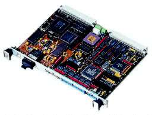

Turbo PMAC2-VME Ultralite
Delta
Tau Data Systems Turbo PMAC2-VME Ultralite board is a programmable multi
axis motion controller. It is capable to perform synchronous coordinated
motion of 32 motors.
This board can be used installed in a VME bus host computer or used as a
stand-alone motion controller. This board must be complemented with MACRO
components allowing distributed motion control over a fiber optic link.

A DSP processor on the board is running under a real time operating
system. The PEWIN32PRO program under Windows XP operating system is used
for serial communucation with the board, and
an EPICS driver is used for
communucation over the VME bus.
Partial list of features:
- Motorola DSP 56k Digital Signal Processor. Non-Turbo CPU options from 40 to 60 MHz
- Flash memory type only.
- VME Bus and/or serial RS-422/RS-232 Control
- Stand-Alone Operation
- Optional Dual-ported RAM for fast communications
- 36-bit position range (± 64 billion counts)
- Optional super-high accuracy clock crystal (<10 ppm) for long term moves accuracy
- Optional Extended (Pole-Placement) servo Algorithm for difficult-to-control systems
- “S-curve” Acceleration and Deceleration
- Cubic Trajectory Calculations, Splines
- Advanced PID servo motion algorithms
- Linear and Circular Interpolation
- G-Code Command Processing for CNC
- 256 motion programs capacity
- Asynchronous PLC program capability
- Rotating buffer for large programs
- Electronic gearing
- Display port for LCD and VFD displays
- On-board General Purpose I/O, OPTO-22 compatible
- Optional I/O expansion boards for up to a total of 2048 multiplexed I/O points